TaSOr project
Pentru un utilizator care nu are cont, singura funcționalitate va fi de a se înregistra.
Pentru un utilizator care are cont, funcționalitățile vor fi:
Daca esti un user nou , iti poti crea un nou cont pe pagina de register.
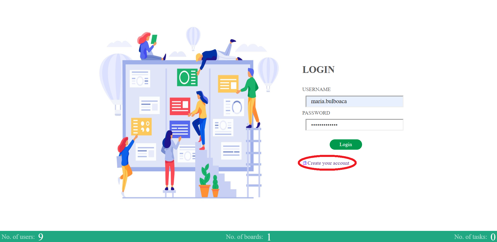 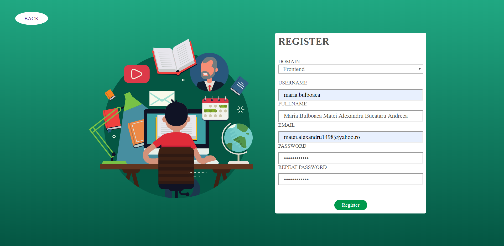Daca ai deja un cont creat, te poti conecta cu introducand username-ul si parola in formular de login.
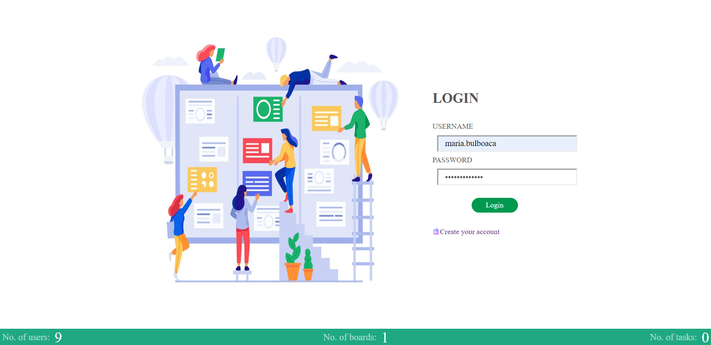Dupa logare, userul va fi redirectionat pe pagina cu board-uri, unde va putea vedea board-urile create de el si board-urile din care face parte.
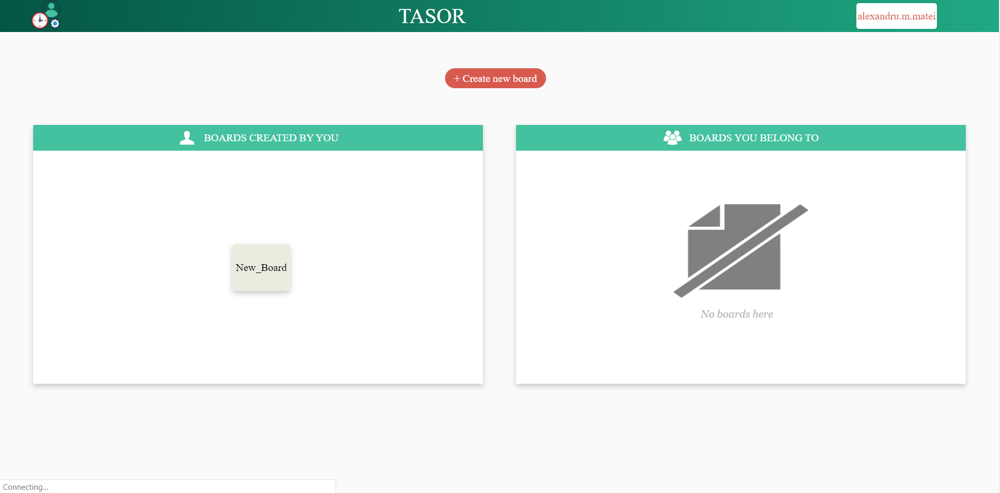Pentru a crea un board, utilizatorul va apasa pe "create new board" si va introduce numele acestuia.
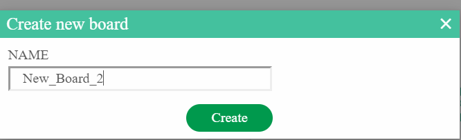Pentru a sterge un board, utilizatorul va intra pe board-ul respectiv si va apasa pe butonul "Delete board"
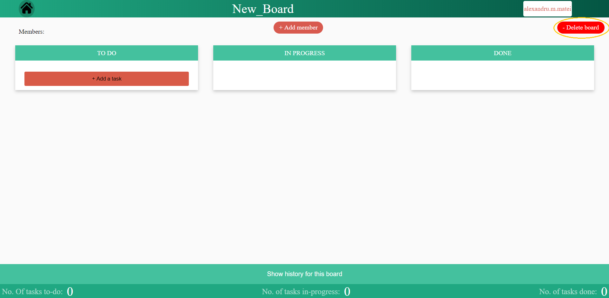Pentru a adauga un task, utilizatorul trebuie sa selecteze un board si apoi sa apese butonul "Add a task"
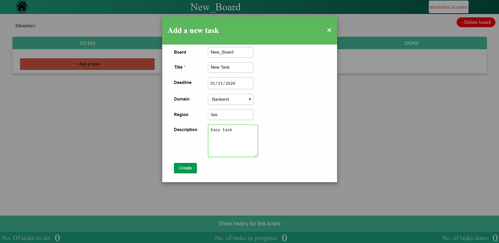Pentru a sterge sau modifica un task, trebuie selectat task-ul
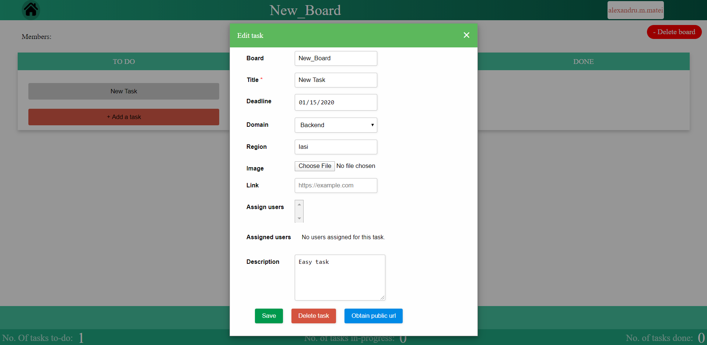Pentru ca un task sa poata fi vazut de catre un vizitator, se poate obtine un url public
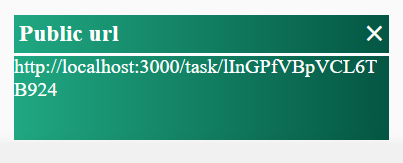Toate actiunile vor fi afisate in istoricul aflat in josul paginii
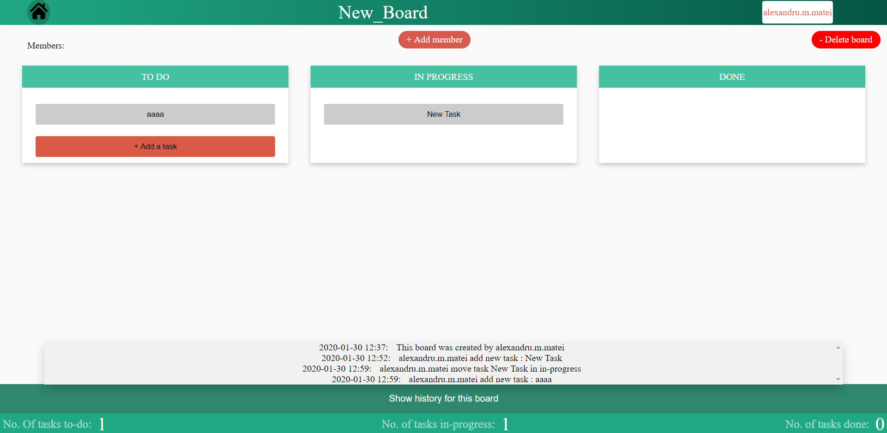Un task poate fi mutat in done doar daca i-a fost asociat un link
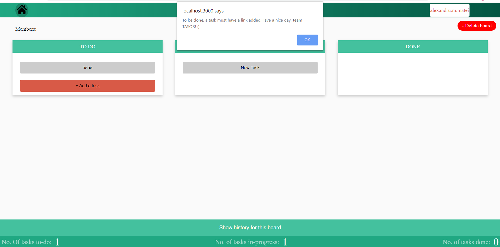 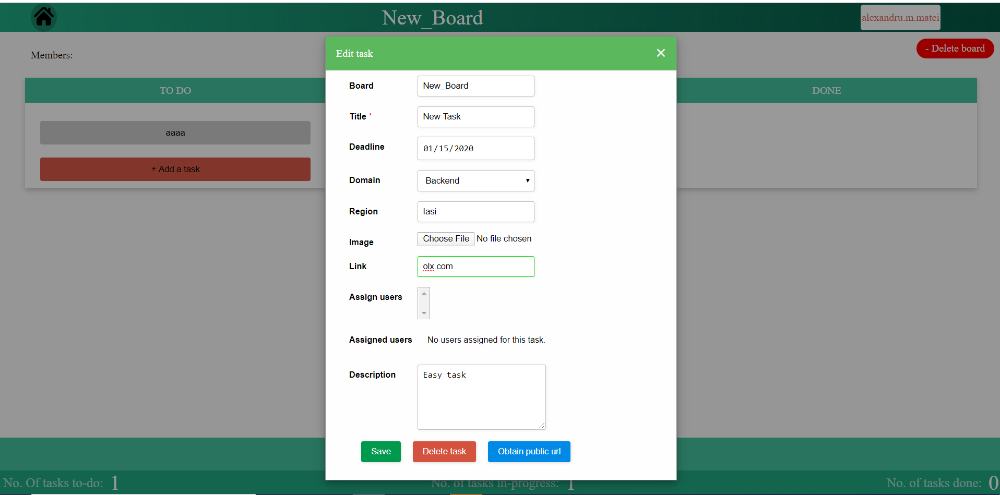 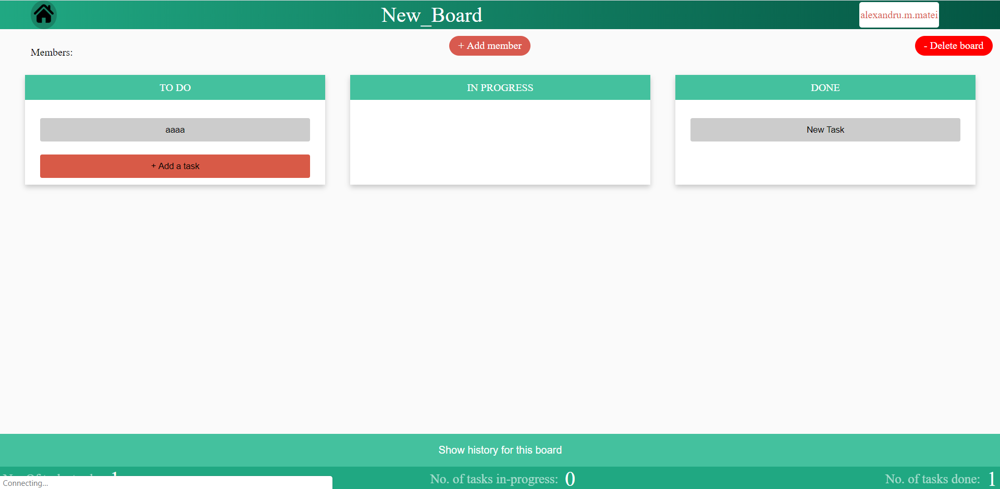Vor fi afisate pe prima pagina si pentru fiecare board in parte
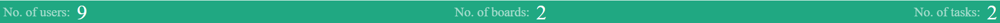La adaugarea unui membru la un board sau la crearea unui task nou, toti membrii board-ului vor primi o notificare pe mail
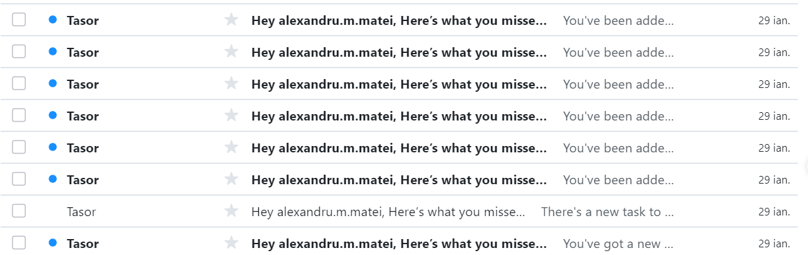Fiecare user isi poate modifica username-ul sau parola
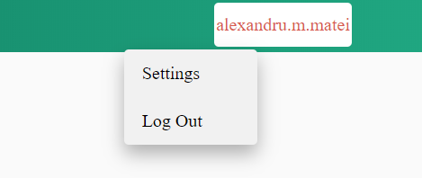 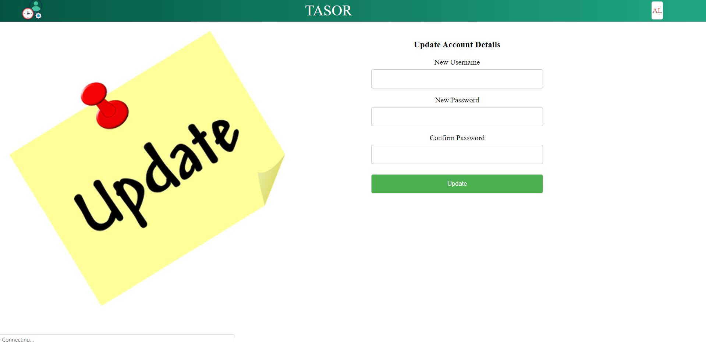